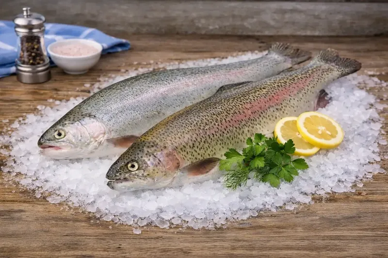

Замороженная рыба
Форель радужная замороженная 1-2кг
Цена и наличие
- 1-2 кг29,5 BYN / кгВ наличии
Данные на 23.11.2026.
Характеристики
- Размерный ряд
- 1-2 кг
- Вид разделки
- непотрошеный
- Страна
- Беларусь
Описание
Радужная форель — это роскошь для вашего стола.
ОСНОВНОЕ
Пищевая ценность на 100 г продукта белки – 20.5 г, жиры – 3.5 г, углеводы – 0 г Энергетическая ценность на 100 г продукта 119 ккал Тип питания низкокалорийный продукт, экологичный продукт Условия и срок хранения хранить при температуре -10 — -20 градусов не более 3 месяцев Страна Беларусь
ДОПОЛНИТЕЛЬНО
Замороженная радужная форель весом от 1 до 2 кг — универсальная рыба для домашнего приготовления, семейного ужина и праздничного стола. Такой размер удобно запекать целиком, разделывать на стейки, порционные куски или филе. Радужная форель отличается нежным, сочным мясом и мягким приятным вкусом. Она подходит для запекания в духовке, приготовления на гриле или мангале, жарки на сковороде, тушения и других горячих рыбных блюд. Вес 1–2 кг позволяет приготовить несколько полноценных порций из одной рыбы. Форель можно запечь целиком с овощами, лимоном и зеленью либо разделать на стейки для приготовления на гриле, сковороде или в духовке. Замороженная форель удобна для длительного хранения и позволяет держать рыбу в запасе до нужного момента. Перед приготовлением продукт рекомендуется постепенно разморозить в холодильнике, после чего рыбу можно разделать и приготовить выбранным способом. Форель хорошо сочетается с лимоном, овощами, свежей зеленью, сливочными соусами и умеренным количеством специй. Благодаря мягкому вкусу она подходит как для простых домашних рецептов, так и для более праздничной подачи. Замороженная радужная форель 1–2 кг подойдет для семейного меню, приготовления стейков, запекания целиком или блюд на компанию. Такой формат удобен для тех, кому нужна крупная рыба без необходимости готовить ее сразу после покупки. В продаже — форель радужная замороженная весом 1–2 кг. Фактический вес конкретной рыбы может отличаться в пределах указанного диапазона. Заказать замороженную радужную форель 1–2 кг можно для запекания, гриля, приготовления стейков и других блюд из рыбы.